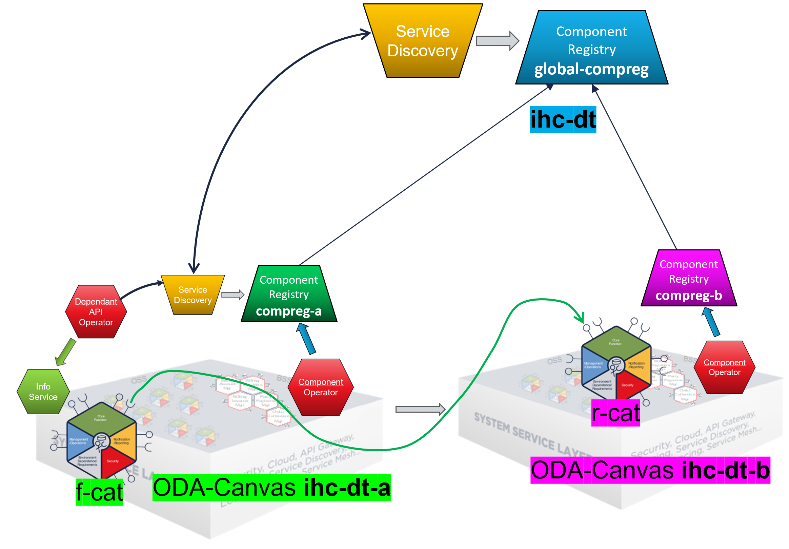

Cluster IHC-DT-A (green)¶
# [blue] - IHC-DT-A
set PROMPT=$_[IHC-DT-A] $g$s
set KUBECONFIG=%USERPROFILE%\.kube\config-ihc-dt-a
set DOMAIN=ihc-dt-a.cluster-2.de
REM set COMPREG_EXTNAME=compreg-ihc-dt-a
set TLS_SECRET_NAME=domain-tls-secret
tmfihcdta
Cleanup¶
helm uninstall -n components f-cat
helm uninstall -n components r-cat
kubectl rollout restart -n canvas deployment canvas-depapi-op
helm uninstall -n compreg global-compreg
kubectl delete ns compreg
cleanup canvas completely¶
helm uninstall -n canvas canvas
kubectl delete ns components canvas-vault cert-manager canvas
Install default canvas¶
helm repo add jetstack https://charts.jetstack.io
helm repo add bitnami https://charts.bitnami.com/bitnami
helm repo add istio https://istio-release.storage.googleapis.com/charts
helm repo update
helm dependency update ./charts/cert-manager-init
helm dependency update ./charts/kong-gateway
helm dependency update ./charts/apisix-gateway
helm dependency update ./charts/canvas-vault
helm dependency update ./charts/pdb-management-operator
helm dependency update ./charts/canvas-oda
cd %USERPROFILE%/git/oda-canvas
helm upgrade --install canvas charts/canvas-oda -n canvas --create-namespace --set keycloak.service.type=ClusterIP
# --set=dependentapi-simple-operator.loglevel=10
port forwarding¶
kubectl port-forward -n canvas svc/canvas-compreg 8080:80
deploy and register upstream global-compreg¶
helm upgrade --install -n compreg global-compreg --create-namespace charts/component-registry --set=domain=%DOMAIN% --set=canvasResourceInventory=
register in canvas-compreg:
curl -sX POST -H "accept: application/json" -H "Content-Type: application/json" -d "{\"id\":\"global-compreg\",\"callback\":\"https://global-compreg.%DOMAIN%/sync\",\"query\":\"source=canvas-compreg\"}" http://localhost:8080/hub | jq
Test¶
deploy r-cat¶
helm upgrade --install r-cat -n components --create-namespace feature-definition-and-test-kit/testData/productcatalog-v1
Populate r-cat with dummy categories¶
get URL from exposedAPI CR:
for /f %i in ('kubectl get exposedapis -n components r-cat-productcatalogmanagement-productcatalogmanagement-v4 -o "jsonpath={.status.apiStatus.url}"') do set RCAT_API=%i
echo %RCAT_API%
curl -skX POST "%RCAT_API%/category" -H "accept: application/json;charset=utf-8" -H "Content-Type: application/json;charset=utf-8" -d "{ \"name\": \"RC1-Internet line of product\", \"description\": \"RC1-Fiber and ADSL broadband products\" }" | jq
curl -skX POST "%RCAT_API%/category" -H "accept: application/json;charset=utf-8" -H "Content-Type: application/json;charset=utf-8" -d "{ \"name\": \"RC1-Mobile line of product\", \"description\": \"RC1-Mobile phones and packages\" }" | jq
curl -skX POST "%RCAT_API%/category" -H "accept: application/json;charset=utf-8" -H "Content-Type: application/json;charset=utf-8" -d "{ \"name\": \"RC1-IoT line of product\", \"description\": \"RC1-IoT devices and solutions\" }" | jq
deploy f-cat¶
helm upgrade --install f-cat -n components --create-namespace feature-definition-and-test-kit/testData/productcatalog-v1 --set component.dependentAPIs.enabled=true
get URL
for /f %i in ('kubectl get exposedapis -n components f-cat-productcatalogmanagement-productcatalogmanagement-v4 -o "jsonpath={.status.apiStatus.url}"') do set FCAT_API=%i
echo %FCAT_API%
optional install canvas-vs (for standalone gateway)¶
install standalone istio gateway¶
helm upgrade --install ihcdta-gateway -n istio-gateway --create-namespace demos/multi-canvas-service-discovery/helm/canvas-component-gateway --set=domain=%DOMAIN%
install virtual services¶
helm upgrade --install -n istio-gateway canvas-vs demos/multi-canvas-service-discovery/helm/canvas-vs --set=domain=%DOMAIN% --set=componentGateway=istio-gateway/ihcdta-gateway
otional create global-compreg virtual service¶
helm upgrade --install -n compreg --create-namespace global-compreg-vs demos/multi-canvas-service-discovery/helm/component-registry-vs --set=fullNameOverride=global-compreg --set=domain=%DOMAIN% --set=componentGateway=istio-gateway/ihcdta-gateway
optional deploy observability and virtual services¶
helm upgrade --install canvas -n canvas --create-namespace charts/canvas-oda --set api-operator-istio.deployment.openMetricsImplementation=ServiceMonitor --set keycloak.service.type=ClusterIP
helm upgrade --install observability -n monitoring --create-namespace charts/observability-stack
helm upgrade --install monitoring -n monitoring %USERPROFILE%/git/oda-canvas-notes/virtualservices/monitoring --set=domain=%DOMAIN% --set=componentGateway=istio-gateway/ihcdta-gateway
list dependencies in canvas info service¶
curl -sX GET https://canvas-info.ihc-dt-a.cluster-2.de/service -H "accept: application/json" | jq
query r-cat¶
curl -skX GET "%RCAT_API%/category" -H "accept: application/json;charset=utf-8" | jq
query f-cat¶
curl -skX GET "%FCAT_API%/category" -H "accept: application/json;charset=utf-8" | jq
show access of r-cat in f-cat logs:¶
kubectl logs deployment/f-cat-prodcatapi -n components
restart f-cat deployment (after dependency changes)¶
kubectl rollout restart deployment -n components f-cat-prodcatapi
deploy canvas from filesystem¶
windows
set DOMAIN=ihc-dt.cluster-2.de
set TLS_SECRET_NAME=domain-tls-secret
cd %USERPROFILE%/git/oda-canvas
helm upgrade --install canvas charts/canvas-oda -n canvas --create-namespace --set keycloak.service.type=ClusterIP --set api-operator-istio.deployment.hostName=*.%DOMAIN% --set api-operator-istio.deployment.credentialName=%TLS_SECRET_NAME% --set api-operator-istio.configmap.publicHostname=components.%DOMAIN% --set=api-operator-istio.deployment.httpsRedirect=false --set=canvas-info-service.serverUrl=https://canvas-info.%DOMAIN% --set=keycloak.keycloakConfigCli.image.repository=bitnamilegacy/keycloak-config-cli
Install Global Component-Registry¶
# [blue] - IHC-DT
cd %USERPROFILE%/git/oda-canvas
helm upgrade --install -n compreg global-compreg --create-namespace charts/component-registry --set=domain=%DOMAIN% --set=canvasResourceInventory= --set=keycloak.url=https://canvas-keycloak.%DOMAIN%/auth/realms/odari
helm upgrade --install -n compreg global-compreg-vs demos/multi-canvas-service-discovery/helm/component-registry-vs --set=domain=%DOMAIN% --set=fullNameOverride=global-compreg
# [blue] - IHC-DT
cd %USERPROFILE%/git/oda-canvas
helm upgrade --install -n compreg upup-compreg --create-namespace charts/component-registry --set=domain=%DOMAIN% --set=canvasResourceInventory=
helm upgrade --install -n compreg upup-compreg-vs demos/multi-canvas-service-discovery/helm/component-registry-vs --set=domain=%DOMAIN% --set=fullNameOverride=upup-compreg
open in browser:
Link registries (in Browser)¶
open in browser
Click Register-Upstream-URL: https://global-compreg.ihc-dt.cluster-2.de
alternative using curl
curl -sX POST https://canvas-compreg.ihc-dt-a.cluster-2.de/hub -H "accept: application/json" -H "Content-Type: application/json" -d "{\"id\":\"global-compreg\",\"callback\":\"https://global-compreg.ihc-dt.cluster-2.de/sync\",\"query\":\"source=compreg-a\"}" | jq
For compreg-b use swagger/curl to do the same:
curl -sX POST https://canvas-compreg.ihc-dt-b.cluster-2.de/hub -H "accept: application/json" -H "Content-Type: application/json" -d "{\"id\":\"global-compreg\",\"callback\":\"https://global-compreg.ihc-dt.cluster-2.de/sync\",\"query\":\"source=compreg-b\"}" | jq
Manually run BDD UC007-F002¶

Scenario Outline: Configure DependentAPI for single downstream productcatalog component
# Install a downstream retail productcatalog component as release r-cat
Given I install the 'productcatalog-v1' package as release 'r-cat'
And the 'productcatalogmanagement' component has a deployment status of 'Complete'
And I should see the 'productcatalogmanagement' ExposedAPI resource on the 'productcatalogmanagement' component with a url on the Service Mesh or Gateway
# Install the federated productcatalog component that has a dependency on a downstream productcatalog as release f-cat
When I install the 'productcatalog-v1' package as release 'f-cat' with component.dependentAPIs.enabled=true
Then I should see the 'downstreamproductcatalog' DependentAPI resource on the 'productcatalogmanagement' component with a ready status
And the 'productcatalogmanagement' component has a deployment status of 'Complete'
Scenario Outline: Populate and verify data in federated product catalog
# Populate the retail product catalog with sample data
Given the 'productcatalogmanagement' component in the 'r-cat' release has the following 'category' data:
| name | description |
| Internet line of product | Fiber and ADSL broadband products |
| Mobile line of product | Mobile phones and packages |
| IoT line of product | IoT devices and solutions |
# Verify that the federated product catalog exposes the populated catalogs
When I query the 'productcatalogmanagement' component in the 'f-cat' release for 'category' data:
Then I should see the following 'category' data in the federated product catalog:
| name | description |
| Internet line of product | Fiber and ADSL broadband products |
| Mobile line of product | Mobile phones and packages |
| IoT line of product | IoT devices and solutions |
Split actions into ODA Canvas IHC-DT-A and IHC-DT-B¶
r-cat –> ihc-dt-b [magenta]
f-cat –> ihc-dt-a [green]
BDD UC007-F002¶
[magenta] Install a downstream retail productcatalog component as release r-cat¶
Given I install the ‘productcatalog-v1’ package as release ‘r-cat’
# [magenta] IHC-DT-B
cd %USERPROFILE%\git\oda-canvas
helm upgrade --install r-cat -n components --create-namespace feature-definition-and-test-kit/testData/productcatalog-v1
Release "r-cat" does not exist. Installing it now.
NAME: r-cat
LAST DEPLOYED: Sat Oct 4 17:44:05 2025
NAMESPACE: components
STATUS: deployed
REVISION: 1
TEST SUITE: None
And the ‘productcatalogmanagement’ component has a deployment status of ‘Complete’
# [magenta] IHC-DT-B
kubectl get component r-cat-productcatalogmanagement -n components
NAMESPACE NAME DEPLOYMENT_STATUS
components r-cat-productcatalogmanagement Complete
And I should see the ‘productcatalogmanagement’ ExposedAPI resource on the ‘productcatalogmanagement’ component with a url on the Service Mesh or Gateway
# [magenta] IHC-DT-B
kubectl get exposedapi -n components
NAME API_ENDPOINT IMPLEMENTATION_READY
r-cat-productcatalogmanagement-metrics https://components.ihc-dt.cluster-2.de/r-cat-productcatalogmanagement/metrics true
r-cat-productcatalogmanagement-partyrole https://components.ihc-dt.cluster-2.de/r-cat-productcatalogmanagement/tmf-api/partyRoleManagement/v4 true
r-cat-productcatalogmanagement-productcatalogmanagement https://components.ihc-dt.cluster-2.de/r-cat-productcatalogmanagement/tmf-api/productCatalogManagement/v4 true
[green] Install the federated productcatalog component that has a dependency on a downstream productcatalog as release f-cat¶
When I install the ‘productcatalog-v1’ package as release ‘f-cat’ with component.dependentAPIs.enabled=true
# [green] IHC-DT-A
cd %USERPROFILE%\git\oda-canvas
helm upgrade --install f-cat -n components --create-namespace feature-definition-and-test-kit/testData/productcatalog-v1 --set component.dependentAPIs.enabled=true
Release "f-cat" does not exist. Installing it now.
NAME: f-cat
LAST DEPLOYED: Sat Oct 4 20:52:52 2025
NAMESPACE: components
STATUS: deployed
REVISION: 1
TEST SUITE: None
Then I should see the ‘downstreamproductcatalog’ DependentAPI resource on the ‘productcatalogmanagement’ component with a ready status
# [green] IHC-DT-A
kubectl get depapis -n components f-cat-productcatalogmanagement-downstreamproductcatalog
NAMESPACE NAME READY AGE SVCINVID URL
components f-cat-productcatalogmanagement-downstreamproductcatalog true 53s 0e16d068-fc39-4cf5-80a0-5e5826b02d10 https://components.ihc-dt.cluster-2.de/r-cat-productcatalogmanagement/tmf-api/productCatalogManagement/v4
And the ‘productcatalogmanagement’ component has a deployment status of ‘Complete’
# [green] IHC-DT-A
kubectl get components -n components f-cat-productcatalogmanagement
NAME DEPLOYMENT_STATUS
f-cat-productcatalogmanagement Complete
From BDD UC007-F002 (data) - [magenta] Populate and [green] verify data in federated product catalog¶
Scenario Outline: Populate and verify data in federated product catalog
# Populate the retail product catalog with sample data
Given the 'productcatalogmanagement' component in the 'r-cat' release has the following 'category' data:
| name | description |
| Internet line of product | Fiber and ADSL broadband products |
| Mobile line of product | Mobile phones and packages |
| IoT line of product | IoT devices and solutions |
# Verify that the federated product catalog exposes the populated catalogs
When I query the 'productcatalogmanagement' component in the 'f-cat' release for 'category' data:
Then I should see the following 'category' data in the federated product catalog:
| name | description |
| Internet line of product | Fiber and ADSL broadband products |
| Mobile line of product | Mobile phones and packages |
| IoT line of product | IoT devices and solutions |
[magenta] Populate the retail product catalog with sample data¶
Given the ‘productcatalogmanagement’ component in the ‘r-cat’ release has the following ‘category’ data:
name |
description |
|---|---|
Internet line of product |
Fiber and ADSL broadband products |
Mobile line of product |
Mobile phones and packages |
IoT line of product |
IoT devices and solutions |
# [magenta] IHC-DT-B
curl -sX POST "http://components.ihc-dt-b.cluster-2.de/r-cat-productcatalogmanagement/tmf-api/productCatalogManagement/v4/category" -H "accept: application/json;charset=utf-8" -H "Content-Type: application/json;charset=utf-8" -d "{ \"name\": \"Internet line of product\", \"description\": \"Fiber and ADSL broadband products\" }" | jq
curl -sX POST "http://components.ihc-dt-b.cluster-2.de/r-cat-productcatalogmanagement/tmf-api/productCatalogManagement/v4/category" -H "accept: application/json;charset=utf-8" -H "Content-Type: application/json;charset=utf-8" -d "{ \"name\": \"Mobile line of product\", \"description\": \"Mobile phones and packages\" }" | jq
curl -sX POST "http://components.ihc-dt-b.cluster-2.de/r-cat-productcatalogmanagement/tmf-api/productCatalogManagement/v4/category" -H "accept: application/json;charset=utf-8" -H "Content-Type: application/json;charset=utf-8" -d "{ \"name\": \"IoT line of product\", \"description\": \"IoT devices and solutions\" }" | jq
[green] Verify that the federated product catalog exposes the populated catalogs¶
When I query the ‘productcatalogmanagement’ component in the ‘f-cat’ release for ‘category’ data:
Then I should see the following ‘category’ data in the federated product catalog:
name |
description |
|---|---|
Internet line of product |
Fiber and ADSL broadband products |
Mobile line of product |
Mobile phones and packages |
IoT line of product |
IoT devices and solutions |
# [green] IHC-DT-A
curl -sX GET "http://components.ihc-dt-a.cluster-2.de/f-cat-productcatalogmanagement/tmf-api/productCatalogManagement/v4/category" -H "accept: application/json;charset=utf-8" | jq
[green] show access of r-cat in f-cat logs:¶
# [green] IHC-DT-A
kubectl logs deployment/f-cat-prodcatapi -n components
...
listCategory :: GET /f-cat-productcatalogmanagement/tmf-api/productCatalogManagement/v4/category components.ihc-dt.cluster-2.de
utils/downstreamAPI/listFromDownstreamAPI :: resourceType = category
utils/downstreamAPI/getDownstreamAPIs :: returning 1 downstream APIs
utils/downstreamAPI/listFromDownstreamAPI :: getting data from downstream API at https://components.ihc-dt.cluster-2.de/r-cat-productcatalogmanagement/tmf-api/productCatalogManagement/v4/category
utils/downstreamAPI/listFromDownstreamAPI :: received 5 records
[green] look into Dependent-API Operator logs¶
# [green] IHC-DT-A
kubectl canvaslogs depapi
[magenta] undeploy r-cat¶
# [magenta] IHC-DT-B
helm uninstall -n components r-cat
categories not visible any longer in [green] f-cat
# [green] IHC-DT-A
curl -sX GET "http://components.ihc-dt-a.cluster-2.de/f-cat-productcatalogmanagement/tmf-api/productCatalogManagement/v4/category" -H "accept: application/json;charset=utf-8" | jq
also r-cat no longer visible in global-compreg
[optional] Create an Up-Upstream compreg¶
# [blue] - IHC-DT
cd %USERPROFILE%/git/oda-canvas/source/services/ComponentRegistry/component-registry-service-tmf639
helm upgrade --install upup-compreg -n compreg --create-namespace helm/component-registry-standalone --set=domain=%DOMAIN%
manually register in gloabl-compreg and sync
cleanup all¶
cleanup IHC-DT (blue)¶
# [blue] - IHC-DT
helm uninstall -n compreg global-compreg
helm uninstall -n compreg upup-compreg
helm uninstall -n canvas component-gateway
kubectl delete ns canvas compreg
cleanup IHC-DT-A (green)¶
# [green] - IHC-DT-A
helm uninstall -n components f-cat
helm uninstall -n canvas canvas canvas-vs
kubectl delete ns components canvas-vault canvas cert-manager
# kubectl delete lease -n kube-system cert-manager-cainjector-leader-election cert-manager-controller
cleanup all IHC-DT-B (magenta)¶
# [magenta] - IHC-DT-B
helm uninstall -n components r-cat
helm uninstall -n canvas canvas canvas-vs
kubectl delete ns components canvas-vault canvas cert-manager
Canvas installation¶
cd %USERPROFILE%/git/oda-canvas
helm repo add jetstack https://charts.jetstack.io
helm repo add bitnami https://charts.bitnami.com/bitnami
helm repo add hashicorp https://helm.releases.hashicorp.com
helm repo update
helm dependency update ./charts/cert-manager-init
helm dependency update ./charts/kong-gateway
helm dependency update ./charts/apisix-gateway
helm dependency update ./charts/canvas-vault
helm dependency update ./charts/pdb-management-operator
helm dependency update ./charts/canvas-oda
helm upgrade --install canvas charts/canvas-oda -n canvas --create-namespace --set keycloak.service.type=ClusterIP --set api-operator-istio.deployment.hostName=*.%DOMAIN% --set api-operator-istio.deployment.credentialName=%TLS_SECRET_NAME% --set api-operator-istio.configmap.publicHostname=components.%DOMAIN% --set=api-operator-istio.deployment.httpsRedirect=false --set=canvas-info-service.serverUrl=https://canvas-info.%DOMAIN% --set=component-registry.domain=%DOMAIN% --set=resource-inventory.serviceType=ClusterIP --set=resource-inventory.serverUrl=https://canvas-resource-inventory.%DOMAIN%/tmf-api/resourceInventoryManagement/v5 --set=component-registry.keycloak.url=https://canvas-keycloak.%DOMAIN%/auth/realms/odari --set=component-registry.ownRegistryName=%COMPREG_EXTNAME%
[—————– TEMP ——————-]
[green] IHC-DT-A¶
set PROMPT=$_[IHC-DT-A] $g$s
set KUBECONFIG=%USERPROFILE%\.kube\config-ihc-dt-a
set DOMAIN=ihc-dt-a.cluster-2.de
set COMPREG_EXTNAME=compreg-a
set TLS_SECRET_NAME=domain-tls-secret
tmfihcdta
deploy canvas¶
helm upgrade --install canvas charts/canvas-oda -n canvas --create-namespace --set keycloak.service.type=ClusterIP --set api-operator-istio.deployment.hostName=*.%DOMAIN% --set api-operator-istio.deployment.credentialName=%TLS_SECRET_NAME% --set api-operator-istio.configmap.publicHostname=components.%DOMAIN% --set=api-operator-istio.deployment.httpsRedirect=false --set=canvas-info-service.serverUrl=https://canvas-info.%DOMAIN% --set=component-registry.domain=%DOMAIN% --set=resource-inventory.serviceType=ClusterIP --set=resource-inventory.serverUrl=https://canvas-resource-inventory.%DOMAIN%/tmf-api/resourceInventoryManagement/v5 --set=component-registry.keycloak.url=https://canvas-keycloak.%DOMAIN%/auth/realms/odari --set=component-registry.ownRegistryName=%COMPREG_EXTNAME% --set=dependentapi-simple-operator.enabled=false --set=dependency-management-keycloak-authz.enabled=true --set=dependency-management-keycloak-authz.deployment.image=ocfork/dependency-management-keycloak-authz
canvas dependency logs¶
kubectl canvaslogs -f deployment dependency-management-keycloak-authz
set default namespace components¶
kubectl config set-context --current --namespace=components
install r-cat with static roles¶
helm upgrade --install r-cat -n components --create-namespace feature-definition-and-test-kit/testData/productcatalog-static-roles-v1
install r-cat2 (standard)¶
helm upgrade --install r-cat2 -n components --create-namespace feature-definition-and-test-kit/testData/productcatalog-v1
install f-cat¶
helm upgrade --install f-cat -n components --create-namespace feature-definition-and-test-kit/testData/productcatalog-v1 --set component.dependentAPIs.enabled=true
Keycloak¶
list dependencies in canvas info service¶
Populate r-cat with dummy categories¶
curl -sX POST "http://components.ihc-dt-a.cluster-2.de/r-cat-productcatalogmanagement/tmf-api/productCatalogManagement/v4/category" -H "accept: application/json;charset=utf-8" -H "Content-Type: application/json;charset=utf-8" -d "{ \"name\": \"RC1-Internet line of product\", \"description\": \"RC1-Fiber and ADSL broadband products\" }" | jq
curl -sX POST "http://components.ihc-dt-a.cluster-2.de/r-cat-productcatalogmanagement/tmf-api/productCatalogManagement/v4/category" -H "accept: application/json;charset=utf-8" -H "Content-Type: application/json;charset=utf-8" -d "{ \"name\": \"RC1-Mobile line of product\", \"description\": \"RC1-Mobile phones and packages\" }" | jq
curl -sX POST "http://components.ihc-dt-a.cluster-2.de/r-cat-productcatalogmanagement/tmf-api/productCatalogManagement/v4/category" -H "accept: application/json;charset=utf-8" -H "Content-Type: application/json;charset=utf-8" -d "{ \"name\": \"RC1-IoT line of product\", \"description\": \"RC1-IoT devices and solutions\" }" | jq
Populate r-cat2 with dummy categories¶
curl -sX POST "http://components.ihc-dt-a.cluster-2.de/r-cat2-productcatalogmanagement/tmf-api/productCatalogManagement/v4/category" -H "accept: application/json;charset=utf-8" -H "Content-Type: application/json;charset=utf-8" -d "{ \"name\": \"RC2-Internet line of product\", \"description\": \"RC2-Fiber and ADSL broadband products\" }" | jq
curl -sX POST "http://components.ihc-dt-a.cluster-2.de/r-cat2-productcatalogmanagement/tmf-api/productCatalogManagement/v4/category" -H "accept: application/json;charset=utf-8" -H "Content-Type: application/json;charset=utf-8" -d "{ \"name\": \"RC2-Mobile line of product\", \"description\": \"RC2-Mobile phones and packages\" }" | jq
curl -sX POST "http://components.ihc-dt-a.cluster-2.de/r-cat2-productcatalogmanagement/tmf-api/productCatalogManagement/v4/category" -H "accept: application/json;charset=utf-8" -H "Content-Type: application/json;charset=utf-8" -d "{ \"name\": \"RC2-IoT line of product\", \"description\": \"RC2-IoT devices and solutions\" }" | jq
query r-cat¶
curl -sX GET "https://components.ihc-dt-a.cluster-2.de/r-cat-productcatalogmanagement/tmf-api/productCatalogManagement/v4/category" -H "accept: application/json;charset=utf-8" | jq
query r-cat2¶
curl -sX GET "https://components.ihc-dt-a.cluster-2.de/r-cat2-productcatalogmanagement/tmf-api/productCatalogManagement/v4/category" -H "accept: application/json;charset=utf-8" | jq
query f-cat¶
curl -sX GET "https://components.ihc-dt-a.cluster-2.de/f-cat-productcatalogmanagement/tmf-api/productCatalogManagement/v4/category" -H "accept: application/json;charset=utf-8" | jq
show access of r-cat in f-cat logs:¶
kubectl logs deployment/f-cat-prodcatapi -n components
restart f-cat deployment (after dependency changes)¶
kubectl rollout restart deployment -n components f-cat-prodcatapi
[—————–]
for connect to public IDP
helm upgrade --install canvas charts/canvas-oda -n canvas --create-namespace --set keycloak.service.type=ClusterIP --set api-operator-istio.deployment.hostName=*.%DOMAIN% --set api-operator-istio.deployment.credentialName=%TLS_SECRET_NAME% --set api-operator-istio.configmap.publicHostname=components.%DOMAIN% --set=api-operator-istio.deployment.httpsRedirect=false --set=canvas-info-service.serverUrl=https://canvas-info.%DOMAIN% --set=component-registry.domain=%DOMAIN% --set=resource-inventory.serviceType=ClusterIP --set=resource-inventory.serverUrl=https://canvas-resource-inventory.%DOMAIN%/tmf-api/resourceInventoryManagement/v5 --set=component-registry.keycloak.url=https://canvas-keycloak.%DOMAIN%/auth/realms/odari --set=component-registry.oauth2.tokenUrl=https://canvas-keycloak.%DOMAIN%/auth/realms/odari/protocol/openid-connect/token --set=dependentapi-simple-operator.oauth2.tokenUrl=https://canvas-keycloak.%DOMAIN%/auth/realms/odari/protocol/openid-connect/token
Links¶
GitHub Issue #384: https://github.com/tmforum-oda/oda-canvas/issues/384
Clusters in GCP https://console.cloud.google.com/kubernetes/list/overview?project=tmforum-oda-component-cluster
GLOBAL COMPREG https://global-compreg.ihc-dt.cluster-2.de
Canvas-Info_Service IHC-DT-B https://canvas-info.ihc-dt-b.cluster-2.de/api-docs/
GitHub Copilot Benefits https://github.com/tmforum-oda/oda-canvas/blob/feature/384_mainly_simple_dependent_operator/source/services/ComponentRegistry/images/upstream-sync-compreg.png
service-discovery switch in Dependent-API-Operator https://github.com/tmforum-oda/oda-canvas/blob/feature/384_mainly_simple_dependent_operator/source/operators/dependentApiSimpleOperator/docker/src/dependentApiSimpleOperator.py#L175-L179

AUTH¶
commandline
set TOKEN_URL=https://canvas-keycloak.ihc-dt.cluster-2.de/auth/realms/odari/protocol/openid-connect/token
set CLIENT_ID=compreg-manager
set CLIENT_SECRET=qyWu...rZp8
curl -sX POST "%TOKEN_URL%" -H "Content-Type: application/x-www-form-urlencoded" -d "grant_type=client_credentials" -d "client_id=%CLIENT_ID%" -d "client_secret=%CLIENT_SECRET%" | jq -r .access_token
Python
import requests
KEYCLOAK_URL = "https://canvas-keycloak.ihc-dt.cluster-2.de/auth/realms/odari/protocol/openid-connect/token"
CLIENT_ID = "compreg-manager"
CLIENT_SECRET = "qyWu...rZp8"
data = {
"grant_type": "client_credentials",
"client_id": CLIENT_ID,
"client_secret": CLIENT_SECRET
}
response = requests.post(KEYCLOAK_URL, data=data)
print(response.json())
make request with auth¶
curl -sX GET -H "accept: application/json" -H "Authorization: Bearer %TOKEN%" https://global-compreg.ihc-dt.cluster-2.de/resource
JWT¶
Access-Token:
{
"exp": 1766148958,
"iat": 1766148658,
"jti": "6050a0cd-11bc-44c5-9f28-a6bae088c0fe",
"iss": "https://canvas-keycloak.ihc-dt.cluster-2.de/auth/realms/odari",
"aud": [
"account",
"compreg-manager3"
],
"sub": "bf3a2dc2-599c-467a-97c6-b359c23edbc4",
"typ": "Bearer",
"azp": "dependentapi-operator3",
"acr": "1",
"realm_access": {
"roles": [
"offline_access",
"uma_authorization",
"default-roles-odari"
]
},
"resource_access": {
"account": {
"roles": [
"manage-account",
"manage-account-links",
"view-profile"
]
},
"compreg-manager3": {
"roles": [
"compreg_query3"
]
}
},
"scope": "profile email",
"clientId": "dependentapi-operator3",
"email_verified": false,
"clientHost": "10.92.0.1",
"preferred_username": "service-account-dependentapi-operator3",
"clientAddress": "10.92.0.1"
}
Cookie JWT payload:
{
"exp": 1766149508,
"iat": 1766149208,
"auth_time": 1766149208,
"jti": "b8a37df8-8eca-4b2c-afff-8d3eff2b1abf",
"iss": "https://canvas-keycloak.ihc-dt.cluster-2.de/auth/realms/odari",
"aud": [
"account",
"compreg-manager3"
],
"sub": "4c0cb740-8c28-410e-a988-a0e92e9df718",
"typ": "Bearer",
"azp": "compreg-manager",
"session_state": "57eca008-0127-413f-909a-7a85184d14b3",
"acr": "1",
"realm_access": {
"roles": [
"offline_access",
"uma_authorization",
"default-roles-odari"
]
},
"resource_access": {
"account": {
"roles": [
"manage-account",
"manage-account-links",
"view-profile"
]
},
"compreg-manager3": {
"roles": [
"compreg_ui3"
]
}
},
"scope": "openid profile email",
"sid": "57eca008-0127-413f-909a-7a85184d14b3",
"email_verified": false,
"preferred_username": "compreg-admin3"
}
Tests with kind¶
#curl.exe -Lo kind-windows-amd64.exe https://kind.sigs.k8s.io/dl/v0.32.0/kind-windows-amd64
curl.exe -sLo kind-windows-amd64.exe https://kind.sigs.k8s.io/dl/v0.23.0/kind-windows-amd64
Move .\kind-windows-amd64.exe c:\dev\bin\kind.exe
kind create cluster --image kindest/node:v1.30.0
kubectl get nodes --show-labels
cd %USERPROFILE%\git\oda-canvas\demos\kind
#git clone --branch v0.10.0 --depth 1 https://github.com/kubernetes-sigs/cloud-provider-kind.git
helm repo add istio https://istio-release.storage.googleapis.com/charts
helm repo update
kubectl create namespace istio-system
helm install istio-base istio/base -n istio-system
helm install istiod istio/istiod -n istio-system --wait
kubectl create namespace istio-ingress
kubectl label namespace istio-ingress istio-injection=enabled
echo "Installing istio gateway pinned to version 1.26.3"
sleep 5
kubectl version
helm version
helm install istio-ingress istio/gateway --version 1.26.3 -n istio-ingress --set labels.app=istio-ingress --set labels.istio=ingressgateway
manually set external IP to localhost:¶
kubectl patch service istio-ingress -n istio-ingress --subresource=status --type=merge -p "{\"status\":{\"loadBalancer\":{\"ingress\":[{\"hostname\":\"istio-ingress.istio-ingress.svc.cluster.local\"}]}}}"
kubectl get svc -n istio-ingress
NAME TYPE CLUSTER-IP EXTERNAL-IP PORT(S) AGE
istio-ingress LoadBalancer 10.96.235.142 istio-ingress.istio-ingress.svc.cluster.local 15021:30665/TCP,80:32372/TCP,443:31791/TCP 37h
patch etc host in windows¶
edit file C:\Windows\System32\drivers\etc\hosts
..
127.0.0.1 istio-ingress.istio-ingress.svc.cluster.local
install canvas¶
helm dependency update ./charts/cert-manager-init
helm dependency update ./charts/apisix-gateway
helm dependency update ./charts/kong-gateway
helm dependency update ./charts/canvas-vault
helm dependency update ./charts/pdb-management-operator
echo DEBUG: update ./charts/canvas-oda
helm dependency update ./charts/canvas-oda
echo DEBUG: helm install canvas -n canvas
helm install canvas -n canvas --create-namespace ./charts/canvas-oda
port forwardings¶
start /B kubectl -n canvas port-forward svc/canvas-keycloak 8083:8083
start /B kubectl -n canvas port-forward svc/resource-inventory 8639:80
start /B kubectl port-forward -n istio-ingress svc/istio-ingress 443:443
start /B kubectl port-forward -n canvas svc/canvas-compreg 8001:80
CompReg: http://localhost:8001
curl http://localhost:8639/tmf-api/resourceInventoryManagement/v5/resource
helm install ctk feature-definition-and-test-kit/testData/productcatalog-static-roles-v1/ -n components
helm install pcother feature-definition-and-test-kit/testData/productcatalog-v1/ -n odacompns-1 --create-namespace
kubectl get components -A
kubectl get exposedapis -A
helm uninstall ctk -n components
install Node.JS¶
https://nodejs.org/en/download/current
set PATH=%PATH%;C:\DEV\node-v26.3.0
run tests¶
cd feature-definition-and-test-kit/utilities/identity-manager-utils-keycloak
npm install
cd ../package-manager-utils-helm
npm install
cd ../resource-inventory-utils-kubernetes
npm install
cd ..
cd ..
npm install
set KEYCLOAK_USER=admin
set KEYCLOAK_PASSWORD=adpass
set KEYCLOAK_BASE_URL="http://localhost:8083/auth/"
set KEYCLOAK_REALM=odari
set RESOURCE_INVENTORY_BASE_URL=http://localhost:8639/tmf-api/resourceInventoryManagement/v5
# overwrite with public domains
set KEYCLOAK_BASE_URL="https://canvas-keycloak.ihc-dt-a.cluster-2.de/auth/"
set RESOURCE_INVENTORY_BASE_URL=http://canvas-resource-inventory.ihc-dt-a.cluster-2.de/tmf-api/resourceInventoryManagement/v5
cd %USERPROFILE%\git\oda-canvas\feature-definition-and-test-kit
npm start
npm run start:tags -- "@UC007-F002"
cucumber reports¶
for report URL
https://reports.cucumber.io/reports/d59fcd2f-ad2a-4339-8172-5b2c73dddda3
download jsonl data by adding …/api/…
curl -so cucumber-report.jsonl https://reports.cucumber.io/api/reports/d59fcd2f-ad2a-4339-8172-5b2c73dddda3
find failed usecases:
type cucumber-report.jsonl | jq -rs ". as $root | [.[] | select(.testStepFinished?.testStepResult.status == \"FAILED\") | .testStepFinished.testStepId] as $failedStepIds | [.[] | select(.testCase) | select(.testCase.testSteps[]?.id | IN($failedStepIds[])) | .testCase.pickleId] | unique as $failedPickleIds | $root[] | select(.pickle) | select(.pickle.id | IN($failedPickleIds[])) | \"\(.pickle.tags[-1].name) - \(.pickle.name)\""